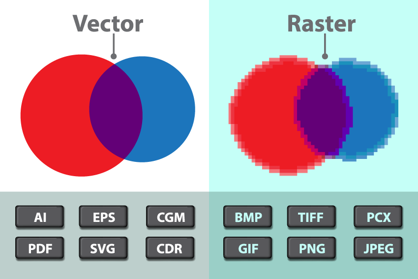
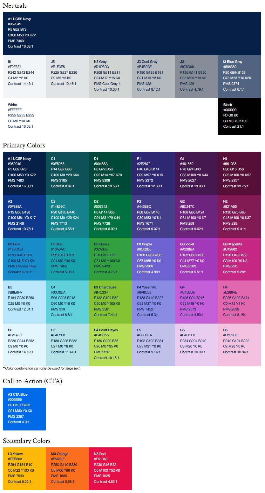
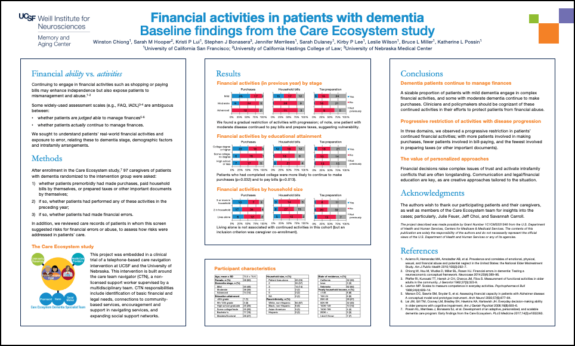

Section 7 Authorship
One of the general aims of the lab (and often a personal aim for research coordinators and students) is to get members involved in authoring papers and posters. (Note: much of what follows primarily concerns authorship of papers. Because posters aren’t fully peer-reviewed, standards for authorship are less stringent and less contested.)
7.1 Why it matters, and what it means
One source of ethical problems with authorship is that it serves several functions in science and academia, and these multiple roles can give rise to conflict and misunderstandings–both within research groups, and from one group to another. Among other things, we use authorship for:
- Establishing credit for work. This is perhaps the key evidence used for promotions and faculty appointments, and is often a critical component of applications to graduate or professional school, residencies, postdocs, etc.
- Proof of productive collaboration. This can be important, e.g., if our lab is planning to apply for a grant application with another lab. Having existing papers with authors from both groups would show a track record of working together.
- Responsibility for the integrity of work. In some ways, this might be the most important yet most overlooked aspect of authorship. Authors are each responsible for ensuring that work is conducted rigorously and reported accurately. Assignment of authorship is relatedly important for detecting conflicts of interest in a piece of work.
This can lead to several unfortunately common problems. Ghost authorship is when someone who authored or co-authored a paper is not listed as an author; e.g., if a pharma company scientist drafts a paper, which is then published under the name of a prominent academic. Courtesy authorship is when someone who didn’t author a paper is listed as an author; e.g., if someone adds their department chair as an author to curry favor with them. Relatedly, sometimes people will include an author’s name without permission, either due to sloppiness or in hopes that a paper will be reviewed more favorably if a prominent scientist is listed as an author. This is a problem because authors are all responsible for the integrity of a paper.
Criteria for authorship vary across disciplines, and sometimes across journals in the same discipline. As a common starting point for discussion, we use the ICMJE guidelines applied by medical journals because they’re the most explicitly codified. In outline, the 4 criteria that must all be met for authorship are:
- A. Intellectual contribution
- B. Drafting or critically revising the paper
- C. Approval of the final draft
- D. Accountability (if the integrity of the work is challenged)
Many problems in authorship come from discrepancies in the contributions that people make to (A) and (B). For example, someone who helps to initiate a project but then leaves might make major contributions to the design of the work, but if this person is not involved in drafting or revising the paper would not count as an author.
Because of this, it’s very important that before writing begins on a paper, consideration should be given to (1) who has made significant intellectual contributions to be eligible for authorship, and (2) whether or how these people can be given a reasonable opportunity to contribute to drafting or revising the manuscript in order to count as authors.
If you are planning to be 1st author on a paper (see below), please consult the MAC Authorship Guidelines when you are conceiving the project and as you are drafting the paper, to ensure that you’re not leaving out someone who should be eligible for authorship.
7.1.2 Involvement of RCs and students
Involvement of more junior members of the research team as authors requires planning in advance, to ensure that they do make sufficient intellectual contributions and play a significant enough role in drafting the manuscript to count as authors. For example, while senior colleagues may plausibly contribute to (B) by drawing on their past scientific and publishing expertise to critically revise a completed draft, it is less plausible that junior colleagues are in a position to contribute in this way. Involvement of more junior colleagues requires planning at the outset of drafting. In my experience, the most feasible drafting roles for RCs and students include: writing parts of the Methods and Results, creating figures/tables, and organizing references. Reserving a paragraph or a figure for a junior colleague to contribute, even if it’s something the first author could have done, can be a way of ensuring that RCs or students who deserve credit for their intellectual contributions (e.g., of acquiring or analyzing data) also fulfill drafting criteria for authorship.
If you are either an RC or student and are interested in becoming the first author of a paper, we will meet to discuss what this means for you in more detail. As a rough outline (see more below), papers for scientific/medical journals usually have the structure:
- Introduction
- Methods
- Results
- Discussion
In my view, if I’m senior author I should expect to have more responsibility for the Introduction and Discussion, since these often involve putting our findings in a broader context. So while I expect you to have principal responsibility for the Methods, Results, and any figures or tables (including organizing the contributions of middle authors), I don’t expect too much from you in the Introduction and Discussion. It’s often a worthwhile exercise to have you take a first stab at drafting them, but in my experience I almost always rewrite them when RCs or students are first authors. So: don’t agonize too much over them–writer’s block over the Introduction and Discussion should never be the cause of delays in completing a manuscript draft.
7.2 Tips for writing papers
Many people find writing intimidating. Some resources to get you started include:
- Strunk & White, The Elements of Style. A classic of English composition, emphasizing clarity and brevity as services to the reader. Not every rule in here needs to be followed strictly, but if you understand the rules you’ll be in a better position to break them when needed.
- Warren Browner, Publishing and Presenting Clinical Research. More specific to medical/clinical research, walking you through the structure of papers by section (since much of this structure is shared with other scientific papers, this resource may be helpful even for non-clinical research).
- Mensh & Kording, “Ten simple rules for structuring papers.” Addressed more to non-clinical scientific research, but again I think broadly helpful. PLoS Computational Biology 2017. In R:\groups\chiong\Resources\Papers-methods-and-reliability.
- Gernsbacher, “Writing empirical articles.” Advances in Methods and Practices in Psychological Science, 2018. In R:\groups\chiong\Resources\Papers-methods-and-reliability.
7.2.1 Choosing a journal
This has gotten more complicated in recent years, in part because of the phenomenon of predatory journals. These are journals that often have names very similar to highly-respected journals, but that don’t actually exercise peer review or any real editorial oversight. These predatory journals often use a version of the “open-access” model–while legitimate open-access journals (like the PLoS journals) charge the authors a fee to cover the costs of editing so that readers can access papers for free, predatory open-access journals accept every paper sent to them so that they can collect fees from authors without actually providing editorial services.
If you’re not already familiar with the journals in a given domain, it’s probably worthwhile to use the Journal Impact Factor as a rough guide to journals’ reputation. Impact factors are pretty flawed measures of journal quality (think of them like U.S. News college rankings), but they can give you a general impression of journals’ reputations and at least hopefully help distinguish predatory journals from similar-sounding legitimate journals.
Another great tool is JANE (Journal/Author Name Estimator). This is a tool where you can input your title and/or abstract, and it will suggest journals (including rough impact factors) based on keyword and textual similarity. You can also use this tool to find articles and authors likely to be relevant to your work.
Finally, in choosing a journal you should know that, at the time of this writing in 2019, the UC system does not have a contract with Elsevier, a major publishing company that publishes Neuron and other Cell Press journals, Cortex, the Current Opinion series, Lancet and Lancet Neurology, NeuroImage, Neuropsychologia, and many others. This means that UC students and faculty do not have library access to Elsevier journals, and many UC faculty and employees have decided not to write, review or edit for Elsevier journals until this is resolved. We have not adopted this position as lab policy, but it is something to keep in mind.
7.2.2 Title
Most good scientific papers have a straightforward, simple finding–usually either of the form A > B or A ~ B–which should similarly arise from a straightforward question. For your paper, you want your potential audience to quickly grasp your research question/finding so they can figure out whether it’s relevant to their interests. (And then hopefully read it!) It’s great if titles can include the Predictor, the Outcome, and the Population; e.g., Han and colleagues, “Financial literacy is associated with white matter integrity in old age.” Someone who is totally naive about this literature can still figure out the finding and probably can infer the research question. An expert in this literature can also figure out the motivation and relevance of the finding, and probably can also figure out much of the methods (a financial literacy questionnaire for the predictor, diffusion tensor imaging (DTI) for the outcome, in a healthy older population).
7.2.3 Introduction (present tense for what is currently known)
If your finding takes the form A > B or A ~ B, your introduction should show why it would matter to know that A > B or A ~ B. Usually in 3-4 elegant paragraphs (except for psychology journals, those introductions are crazy long) you want to:
- establish the scientific, clinical or public health importance of the topic
- briefly summarize previous research in this area
- identify shortcomings or gaps in current knowledge (focused on problems that your study will fix)
- show how your study addresses these shortcomings or gaps (sketching an overview of your hypothesis, design, sample and methods)
Basically, in the introduction you want to get your audience interested in the question that your study is set up to answer.
7.2.4 Methods (past tense for what you did)
Now demonstrate to the reader how you plan to show that A > B or A ~ B. Note that if the study has a preregistered protocol, it’s best to try to keep the description of the methods similar to the description in the protocol–when feasible, don’t even paraphrase but instead keep the exact same wording. Key overall elements of the Method are:
- In clinical research, specifying the type of design (e.g., retrospective vs. prospective, case-control vs. cohort vs. RCT)
- Research subjects: the population, the inclusion/exclusion criteria, the controls
- Measurements, both for predictors and outcome variables. It’s important to organize these in a way that’s friendly to the reader. Usually it’s most straightforward to group the predictor variables together and then the outcome variables. Also see Browner for thoughts about how to convey the appropriate level of detail for your target audience.
- Analysis: your statistical plan and why you used the tests that you used.
Make sure you explain decisions you made that might seem odd to reviewers (e.g., excluding subjects and your rationale for doing so), and any missing data and how missing data were handled.
7.2.5 Results (past tense for what you found)
A tricky thing for new scientific writers is understanding the relationship, on one hand, between the Methods and Results; and on the other hand, between the Results and the Discussion.
- “All results must have methods; all methods must have results.” Basically, if you describe some procedure in your Methods, then whatever happened needs to show up in your Results. Similarly, if you describe some finding in your Results, your reviewers need to be able to figure out how you arrived at that finding from your Methods.
- In general, the Results are supposed to describe what you found, and the Discussion is supposed to interpret them. So the Results are not supposed to include any interpretation–sometimes you can get away with something like, “As predicted, A > B,” but some reviewers will balk even at that. Also, there should be no new results in the Discussion.
It’s really important to structure your results so that your main or most interesting finding is obvious and easy to find. You don’t want it buried in the middle of a long paragraph or hugely complicated table or figure. The normal order is to start with a quick rundown of descriptive results (who your research participants were and what happened to them), and then get to your main analytic finding. Usually you want to keep your strongest findings first, and simple results (like main effects) before complex ones (interaction effects, multivariate models, validity checks); it’s also helpful when possible to mirror the ordering of your Methods.
One especially tricky thing is figuring out which results just to describe in the main text, as opposed to creating a figure or table. See below for more on figures. Usually if your result is just a matter of one or two numbers (e.g., your finding is A > B and you want to show A and B’s point estimates and confidence intervals), then you should just put this in text.
Overall, the text and the tables/figures should complement one another. As Browner (Chapter 5) notes, new investigators often write the text around their tables and figures, e.g., “Table 1 shows… The multivariate results can be seen in Table 2…” See Browner for suggestions on how to use the text to help your reader interpret the data in your figures and tables.
7.2.6 Discussion (past tense for talking about what you found, present tense for what it means)
It’s helpful to go back to the question that you posed in the Introduction, and then to indicate that your study has answered this question. Synthesize and summarize the key findings, including particular mention of any that are surprising or otherwise noteworthy. Try to use words rather than numbers to do this; if numbers are included they should be kept simple.
Then write about what you think the results mean, indicating how strongly you believe them. Some people treat the Discussion as a “sales job”–I don’t think this is a good way to view your relationship to the reader. My preference is to try to perform a service to the reader, by helping the reader to place your findings in appropriate context. So if you think your findings really do “demonstrate” that A > B or A ~ B, go ahead and say so; but if you know that the data admit of alternative interpretations, you can signal this by saying that your findings “suggest” that A > B, or that a reasonable interpretation is that A > B.
If there are special features of your study you might choose to highlight them, but avoid bragging or claims of priority (“this is the first/largest…”). Briefly synthesize previous research to show how your work relates to the existing literature. Set up your limitations and explain them (e.g., why you used the sample you did, or why a given statistical model didn’t fit), including not only design/methodological limitations, but also limitations of your interpretation of findings.
7.3 More about figures
A great guide for thinking about how to communicate statistics with figures is Tufte’s The Visual Display of Quantitative Information (I have a copy you can borrow if you like). Tufte’s focus is on how we can use design to help facilitate understanding of relationships in data. Another resource is Rougier, Droettboom & Bourne, “Ten simple rules for better figures.” PLoS Computational Biology 2014. (In R:\groups\chiong\Resources\Papers-methods-and-reliability)

One important thing to understand about figures is the difference between vector and raster graphics. Raster graphics are the most familiar to people–these are the images created by digital cameras, and are composed of a grid of tiny squares called pixels (similar to needlepoint). To edit a raster image, we use programs like Paint or Photoshop to change the colors assigned to each pixel. Vector graphics are instead made up of lines and curves that are mathematically defined. (If you’ve used the drawing tools in Powerpoint or Google Slides, these are vector graphics.) To edit a vector image, we use programs like Illustrator or Affinity Designer to move or change the points that define the lines and curves.
Because raster graphics are actually made up of tiny squares, there is a limit to how far you can magnify them–zoom in too close, and you get jagged effects where what is supposed to be a curve or slanted line turns out actually to be blocky. Meanwhile, vector graphics are defined mathematically, so you can zoom in on them indefinitely. Related to this, it’s very easy to convert vector graphics to raster graphics, but it’s hard to go in the other direction.
Most figures, like line or bar graphs created by Stata or R, are produced as vector graphics. These should be saved in an appropriate vector format (most commonly EPS, sometimes AI), and edited as vector graphics. If you convert them to raster, then it will be nearly impossible to edit them again as vector graphics.
Some other figures (such as from neuroimaging) are generated as raster graphics. When editing these, please be aware that the screen resolution of your monitor (often something like 72 dots per inch) is much lower than print resolution (300-600 dpi). If your graphics are intended for publication, they need to be created and edited in print resolution.
7.3.1 Style and design
As emphasized by Rougier and colleagues, do not just use the defaults from the stats program (Stata, R, Matlab…) used to create your figures. Instead, you want your figures to demonstrate your active thinking about the most revealing and helpful ways to display your data–e.g., if there are multiple colors, this should be because the colors denote something meaningful or informative that you’re signaling your reader to pay attention to, and not just because the colors are part of the default settings on your stats package.
You have two main options for customizing your figures. First, you can modify output settings of your stats program, and in this way tweak your labels, legends, line thickness and color, point markers and so forth. Second, you can save the figure in an editable vector format such as EPS, and then open the image file in a vector editing program such as Illustrator or Affinity Designer. In practice, I usually rely on a combination of the two approaches, as some changes are easier and more efficient to do in a stats program, and others are easier to do in an editing program.
For consistency, I recommend changing all figure labels to Helvetica, unless another font is specified by the journal you’re submitting to. (Stylistic consistency will help when we want to combine figures from different projects, e.g. in future grant applications or presentations. In general, our lab products, following UCSF style, use the fonts Helvetica and Garamond. In a pinch you can use Arial in place of Helvetica, but I will complain about it.) See the website-and-identity/fonts folder in the R: drive.
Finally, when possible it’s nice to use the UCSF color scheme. Just using any consistent color scheme will help later on when we want to combine figures from different projects, and relying on the UCSF scheme will help things look consistent on posters. To access the UCSF color scheme, go to the UCSF brand guide for colors.

You’ll notice that each color has numbers associated for RGB (quantities of red, green and blue light). To use these in your program, you need to go beyond the preset colors–look for a color palette or an option for More Colors… Then from that find the option to enter the numeric RGB values directly (rather than trying to choose a shade that matches), and use the values from the UCSF color scheme:

7.4 Notes on posters
I like to think of posters as preparation for writing the paper that will eventually result from your project. Selfishly, in the poster session you’ll want to talk to people who know enough about your topic or methods to be helpful in your thinking about how to write up the project–or, maybe if you’re lucky, to PIs or other people whom you’re trying to impress. Communicating your findings to other people who are not in the area is rewarding but of secondary importance.
Trying to view posters in poster sessions is cognitively overwhelming. Some conferences like SfN have thousands of posters. Personally, I’ve found that I can only take in a handful of posters in a session, and I actively ignore everything else in the poster hall because otherwise details get jumbled together and I don’t remember anything. When you’re designing your poster, think about ways to specifically draw in the people you want to talk to.
Depending on what stage you’re at in your project, you might be looking particularly for feedback on your framework, or methods, or analysis, or findings. Whatever it is, you want it to be obvious from a distance to people who are interested in that area that your poster is relevant to them. E.g., use eye-catching figures, but only if those figures quickly communicate what your project is about, and particularly the parts that you’re looking for feedback about. And knowing that people are cognitively overtaxed, don’t make them work to figure out what you mean: use labels and headings to help people know what they’re looking at and what you want them to think.

Here’s a mockup of a poster (not the actual one–don’t examine too closely) that demonstrates some strategies for organizing a poster:
- High-value material is placed at the top of each panel: on the left, the conceptual framework and motivation; in the middle, the major figure; and on the right, the takeaways. This makes these elements easier to spot from a distance in a crowded hall.
- Finer details are placed at the bottom: these are things you’re including for thoroughness and might be of interest to someone who’s already interested in the poster, but aren’t things that you expect to draw people in. Here I’ve put background info on the study from which the data is derived, a table characterizing the participants (usually “Table 1,” but here crammed at the bottom and in tiny font), and Acknowledgments/References.
- The poster is organized to make it easy for people to visually scan and find the parts they’re interested in. There’s a fair amount of white space, so the text isn’t all crowded on top of itself. (Even though this required us to make the font size a little smaller than it might otherwise have been.) The headers use a consistent font/color convention and a familiar Intro-Methods-Results-Discussion format.
- When someone is reading a paper, it’s the only thing they’re looking at, so you don’t always have to spell everything out for them. When someone is looking at a poster, it’s one thing among many others in a crowded and distracting poster hall, so you have to make it very obvious what lessons they’re supposed to draw or they’ll get frustrated and move on. Here, each figure in the Results section has a descriptive title, and also includes brief text to help viewers know what’s going on. Similarly with the takeaways: try to come up with two or three really quick and clear messages that viewers should walk away with at the end.
- Note that the graphics use the UCSF color scheme (as explained in More about figures - Style and design above), so they’re easy to combine from different sources without clashing. (The “Care Ecosystem study” diagram is taken directly from Kate Possin’s paper about the Care Ecosystem.)
One last picky thing. The Windows versions of Microsoft Word and Powerpoint have an annoying issue where, if you use “Save As…” with the “Save as type: PDF” option, they convert all instances of Helvetica to Arial. To get around this, use the “Print…” menu and choose “Microsoft Print to PDF” (or similar options from Foxit or Adobe if you have them installed) as the printer. (Not an issue on Macs.)